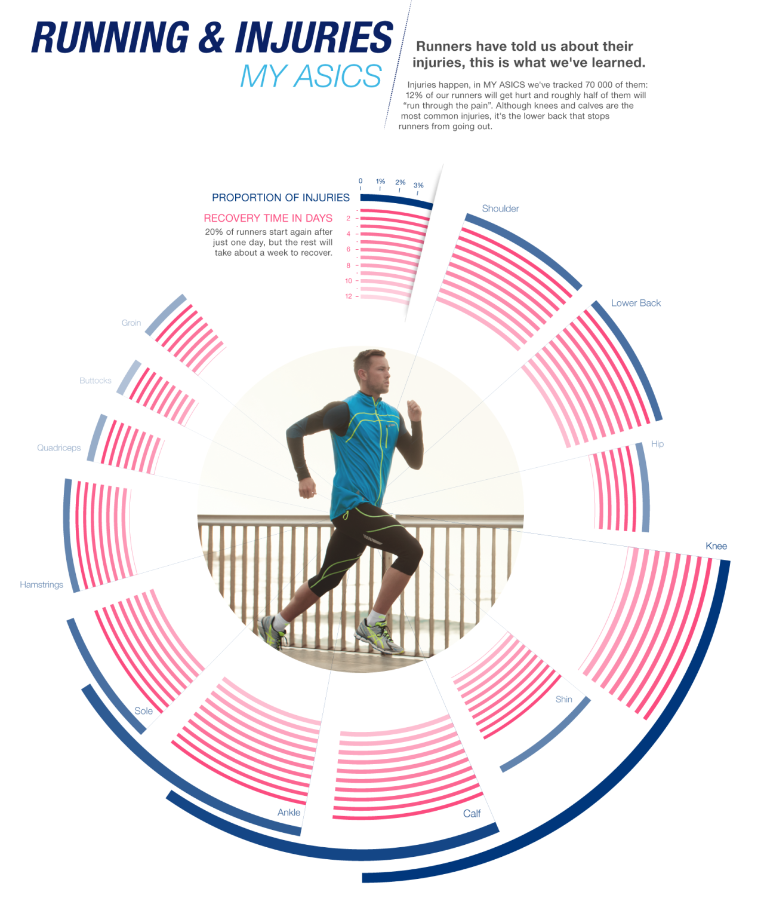

ELI HARRELL
D3 Data Visualization
a computer ~ 2D project
I was tasked with creating a better visualization of the inscrutable Asics advertisement below.
My design locates the injury rates on a "body map," since it would be the most legible—everyone
can find their knee, but not everyone can read a radial diagram. Like precipitation radar shown on TV,
I used a banded colormap to allow the viewer to quickly discriminate the overall intensity of a value
in a given location, as well as using the legend to look up the exact value.
Alternatively, in acting against every dictum of good data visualization, I produced an even more cryptic representation
of the Asics data. Both versions are linked below.
→ good visualization
→ bad visualization
|  |
View the JavaScript for each visualization is here: good.js and bad.js.
Additional files: util.js, asics.csv, body.svg.